Project Introduction
This project aims to restore the early color photographs taken by Prokudin-Gorskii in the Russian Empire. By automatically splitting, aligning, and merging the BGR channels from grayscale images, we achieve color image reconstruction. The project covers key techniques such as channel splitting, automatic alignment (NCC + pyramid), image fusion, and brightness normalization, and finally presents several restored color results.
Project Principle & Key Code
Step 1: Split BGR Channels
The image is split into three equal parts, corresponding to the B, G, and R. Then, also a small margin is cropped to remove potential borders.
The image is split into three equal parts, corresponding to the B, G, and R. Then, also a small margin is cropped to remove potential borders.
Show Code
def split_bgr(img):
h = img.shape[0] // 3
margin = int(0.12 * h)
b = img[:h, :][margin:-margin, margin:-margin]
g = img[h:2*h, :][margin:-margin, margin:-margin]
r = img[2*h:3*h, :][margin:-margin, margin:-margin]
return b, g, r
Step 2: Channel Alignment (NCC & Pyramid)
The Green and Red channels are automatically aligned to the Blue channel using normalized cross-correlation (NCC). For large images, a pyramid (coarse-to-fine) approach is used to speed up alignment.
The Green and Red channels are automatically aligned to the Blue channel using normalized cross-correlation (NCC). For large images, a pyramid (coarse-to-fine) approach is used to speed up alignment.
Show Code
def pyramid_align(ref, img, search_range=20, min_size=64):
"""Recursive pyramid alignment, suitable for large images."""
if min(ref.shape) < min_size:
return (0, 0), -np.inf
# Downsample
ref_small = cv2.pyrDown(ref)
img_small = cv2.pyrDown(img)
# Recursively aligning
offset_small, _ = pyramid_align(ref_small, img_small, search_range, min_size)
# Upscale to current level
offset = (offset_small[0]*2, offset_small[1]*2)
best_offset = offset
best_score = -np.inf
ref_crop = ref[search_range:-search_range, search_range:-search_range]
ref_norm = (ref_crop - np.mean(ref_crop)) / (np.std(ref_crop) + 1e-9)
for dy in range(offset[0]-2, offset[0]+3):
for dx in range(offset[1]-2, offset[1]+3):
shifted = np.roll(np.roll(img, dy, axis=0), dx, axis=1)
shifted_crop = shifted[search_range:-search_range, search_range:-search_range]
shifted_norm = (shifted_crop - np.mean(shifted_crop)) / (np.std(shifted_crop) + 1e-9)
score = np.sum(ref_norm * shifted_norm)
if score > best_score:
best_score = score
best_offset = (dy, dx)
return best_offset, best_score
Step 3: Do and Find the Best Alignment
Invoke the alignment function for each channel. It should be considered that the effect varies when you choose different channels to align with. Sometimes the R channel can match the B channel well, while sometimes the G channel is more aligned with the R channel. So we should find the best matching.
Invoke the alignment function for each channel. It should be considered that the effect varies when you choose different channels to align with. Sometimes the R channel can match the B channel well, while sometimes the G channel is more aligned with the R channel. So we should find the best matching.
Show Code
offset_g2b, score_g2b = pyramid_align(b, g)
offset_r2b, score_r2b = pyramid_align(b, r)
offset_r2g, score_g2r = pyramid_align(g, r)
# Choose best offsets based on scores
if score_g2r > score_r2b:
if score_g2b > score_r2b:
offset_g = offset_g2b
offset_r = (offset_g2b[0] + offset_r2g[0], offset_g2b[1] + offset_r2g[1])
else:
offset_r = offset_r2b
offset_g = (offset_r2b[0] - offset_r2g[0], offset_r2b[1] - offset_r2g[1])
else:
offset_r = offset_r2b
if score_g2b > score_r2b:
offset_g = offset_g2b
else:
offset_g = (offset_r2b[0] - offset_r2g[0], offset_r2b[1] - offset_r2g[1])
Step 4: Merge and Save
The aligned channels are stacked to form a color image, which is then saved. I also normalized each channel to the same mean and std before merging, to ensure the values of lightness and contrast are consistent.
The aligned channels are stacked to form a color image, which is then saved. I also normalized each channel to the same mean and std before merging, to ensure the values of lightness and contrast are consistent.
Show Code
g_aligned = np.roll(np.roll(g, offset_g[0], axis=0), offset_g[1], axis=1)
r_aligned = np.roll(np.roll(r, offset_r[0], axis=0), offset_r[1], axis=1)
bgr = np.dstack([b, g_aligned, r_aligned])
margin = int(0.05 * min(b.shape))
bgr = bgr[margin:-margin, margin:-margin]
# Make sure each channel has same value of lightness
bgr[:,:,0] = normalize_channel(bgr[:,:,0])
bgr[:,:,1] = normalize_channel(bgr[:,:,1])
bgr[:,:,2] = normalize_channel(bgr[:,:,2])
Step 5: Display Results
The results are shown below.
The results are shown below.
Results Display
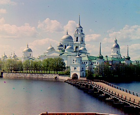
monastery_result.jpg
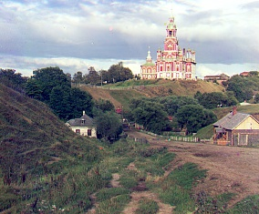
cathedral_result.jpg
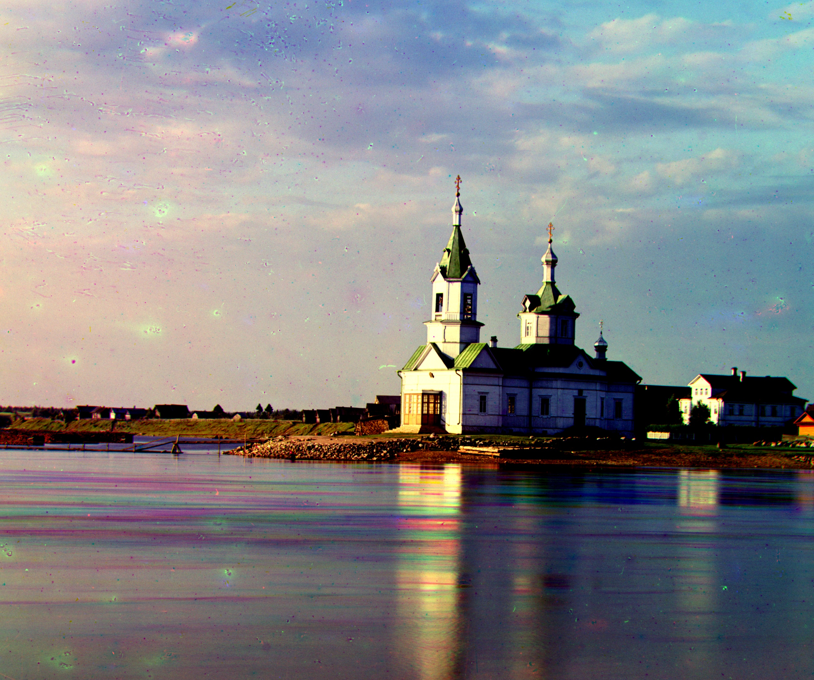
church_result.jpg
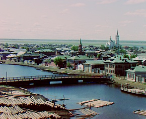
tobolsk_result.jpg
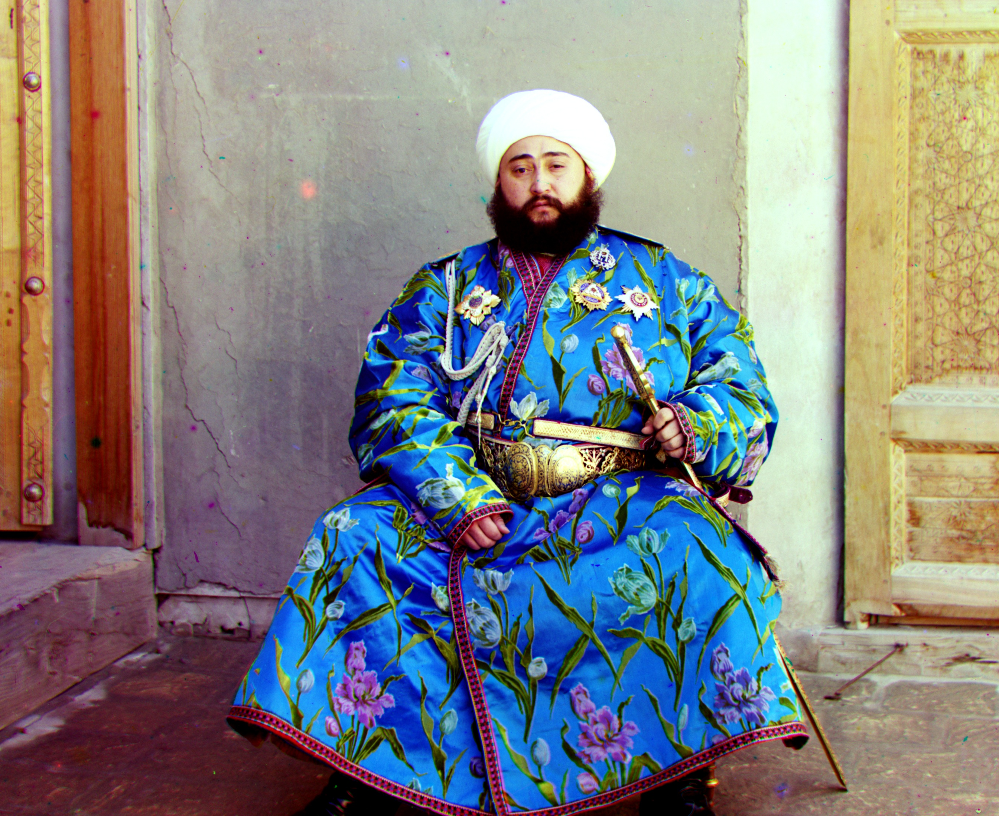
emir_result.jpg
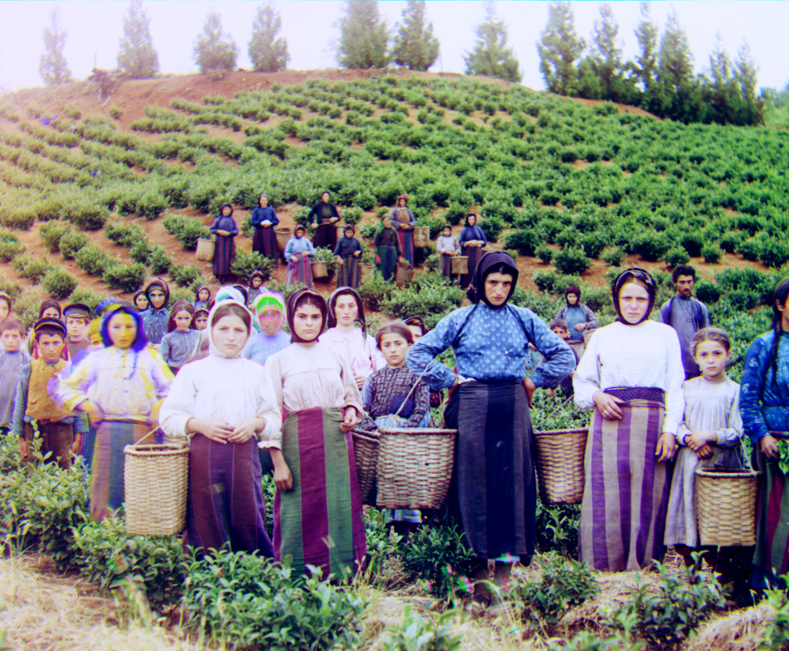
harvesters_result.jpg
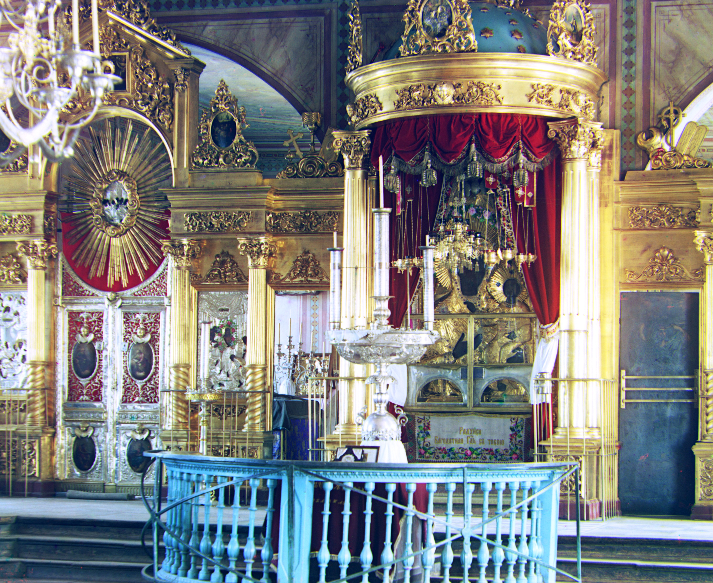
icon_result.jpg
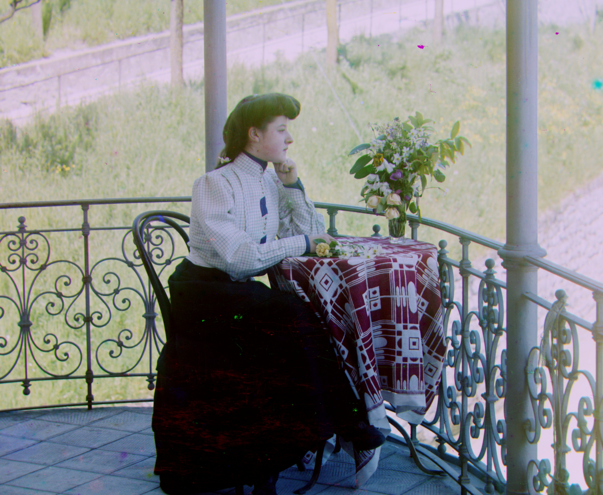
italil_result.jpg
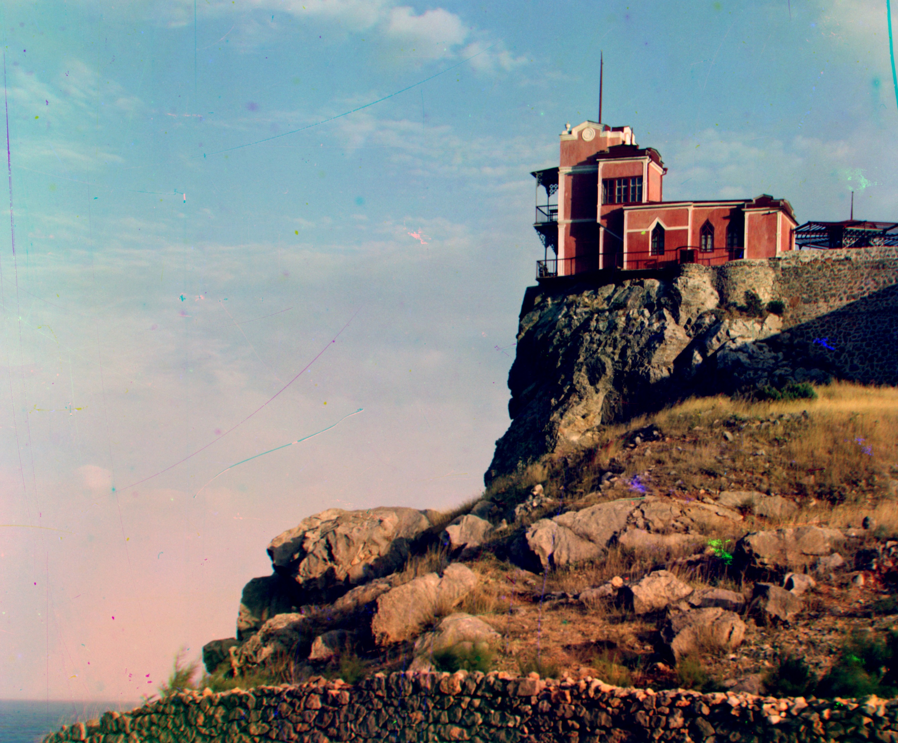
lastochikino_result.jpg
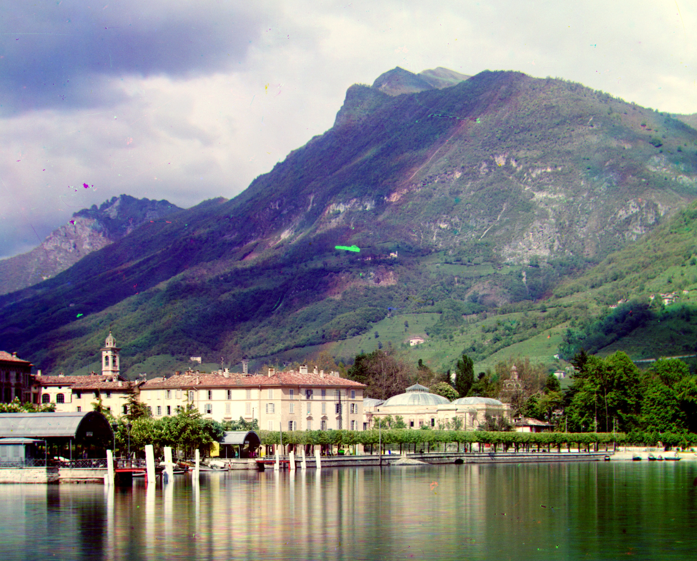
lugano_result.jpg
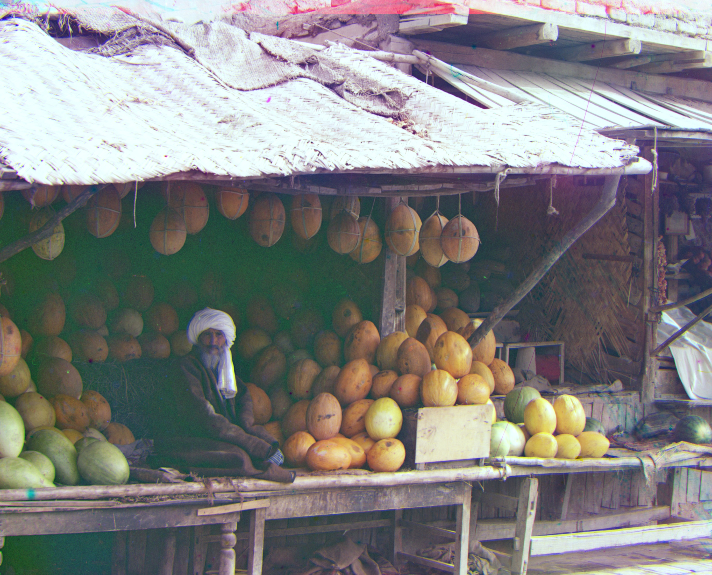
melons_result.jpg
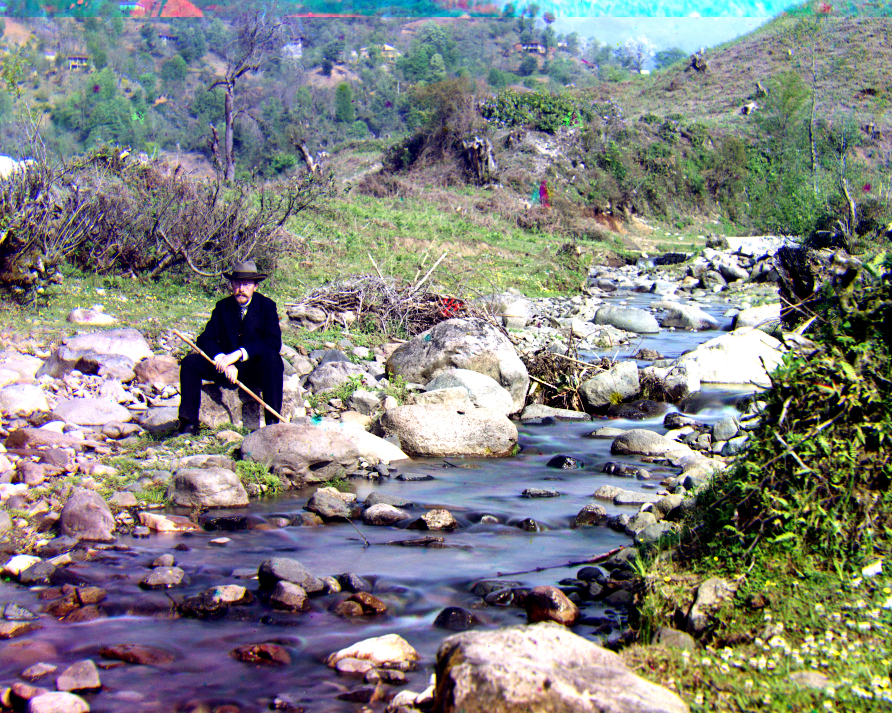
self_portrait_result.jpg
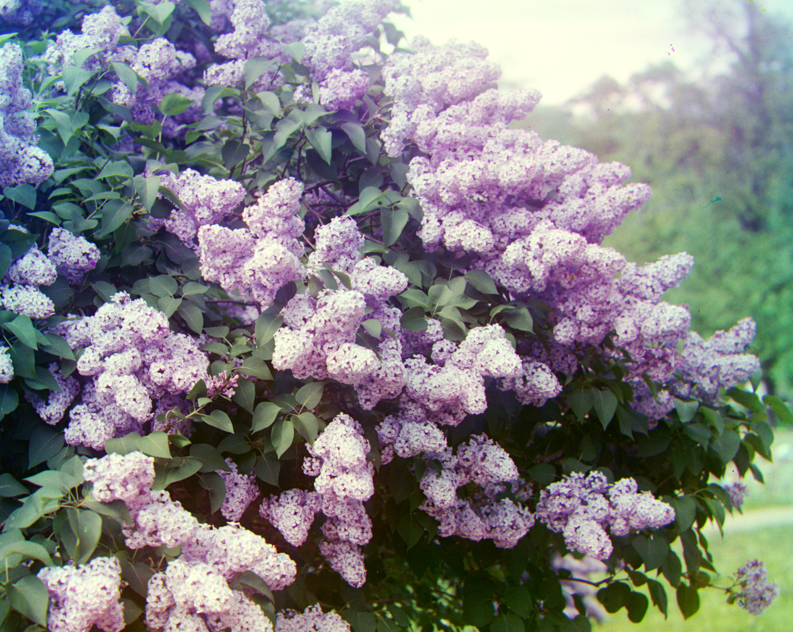
siren_result.jpg
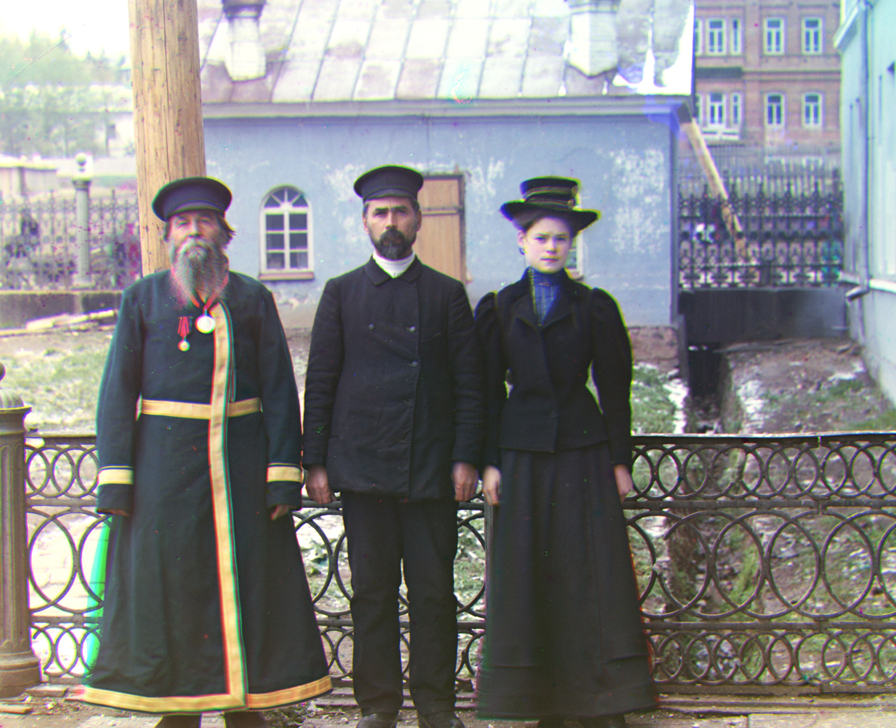
three_generations_result.jpg